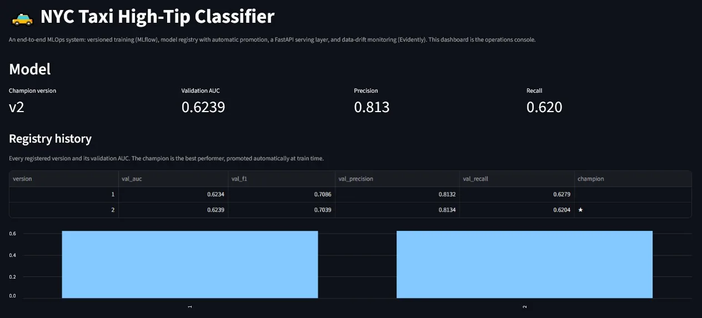

MLOps de gorjetas em NY
Retreino mensal com dados reais novos, promoção por teste estatístico, registro de modelos, uma API e monitoramento de drift.
+0,010de AUC do modelo treinado em agosto de 2026 sobre o antigo campeão, nas mesmas corridas de setembro; promovido porque o intervalo de 95% fica acima de zero

- Decisão que apoia
- Confiar ou não no modelo que está no ar, e quando trocá-lo.
- Quem usa
- Times de dados que mantêm modelos em produção.
- Quanto custa errar
- Um modelo que perdeu a validade continua decidindo sem ninguém saber.
- Como gera valor
- Todo mês um desafiante treinado no mês mais novo só entra no ar se for comprovadamente melhor (intervalo de 95% acima de zero), a API calcula as features igual ao treino, e o drift de dados é detectado (de 4% para 13% de pagamentos desconhecidos).
- Riscos e limites
- O modelo em si é fraco (AUC 0,625); o valor está na engenharia em volta dele.
Problema
Um modelo só tem valor em produção se cada etapa em volta dele for confiável: treino repetível, uma regra para qual versão está no ar, features calculadas do mesmo jeito no serving e um sinal quando os dados mudam.
Solução
Um sistema de MLOps em volta de um classificador que prevê, no fim da corrida e antes do pagamento, se uma corrida de táxi em Nova York vai dar mais de 20% de gorjeta: rastreamento e registro com MLflow, um serviço FastAPI, relatórios de drift com Evidently, um painel de operação em Streamlit e um CI que roda o ciclo inteiro, inclusive o Docker.
Como funciona
- Sem vazamento de rótulo: nenhum dado do pagamento entra, só o que se sabe quando a corrida termina, o que limita a nota de forma honesta.
- Todo mês o CI acha o mês mais novo da TLC, treina um desafiante e compara com o campeão no mesmo mês fora do treino; ele só é promovido se o intervalo de bootstrap pareado do ganho ficar acima de zero.
- Um teste confere que a API calcula as features exatamente como o treino.
Resultados
| 0,625 vs 0,615 | de AUC do novo e do antigo campeão em 500.000 corridas de setembro de 2026 |
| 4% → 13% | de drift na fatia de tipo de pagamento desconhecido, detectado de 2024 para 2025 |
| 42 | testes, mais o retreino mensal com dados reais no CI |
Limites
Gorjeta é difícil de prever a partir dos dados da corrida; o valor do projeto está na engenharia em volta do modelo.
Stack
MLflow, FastAPI, Evidently, Docker, Streamlit